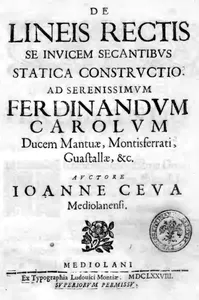
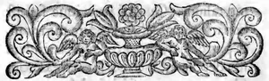
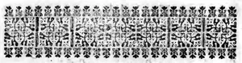

Prolegomena: Title Page, Dedication & Preface¶
The preliminary leaves of Giovanni Ceva's De Lineis Rectis Se Invicem Secantibus Statica Constructio (Milan: Ludovico Monza, 1678, folios 0001–0017) frame the entire treatise: the BNCF Florence Magliabechiano binding and title page dedicated to Duke Ferdinando Carlo Gonzaga, the dedicatory epistle signed by Ceva, and the Prooemium narrating how the substitution of Archimedean weights for straight lines (substitutisque linearum vice ponderibus) gave birth to his static construction.
Statica Prolegomena · Titulus, Dedicatio & Prooemium
Præliminaria editionis principis Mediolanensis anni MDCLXXVIII (ex Typographia Ludovici Montiæ, folia 0001–0017): titulus operis, epistola dedicatoria ad Serenissimum Ferdinandum Carolum Ducem Mantuæ, atque Prooemium ad lectorem de noua statica constructione linearum rectarum.
Prolegomena — Archival & Historical Notes
Primary Source Witness: Biblioteca Nazionale Centrale di Firenze, Fondo Magliabechiano CFMAGL. 1.7.137 (Internet Archive ita-bnc-mag-00001346-001; 126 digitized scans).
Prolegomena — Summary
The Statica Prolegomena (unnumbered frontmatter, scans 0001–0017) comprise three atomic sections:

Title Page & BNCF Witness Binding
On Straight Lines Mutually Intersecting: A Static Construction

Dedication to Duke Ferdinando Carlo
To the Most Serene Duke of Mantua, Ferdinando Carlo

Preface to the Reader
Considering often amid the vicissitudes of human fortune how welcome a solace philosophy provides, I turned in youth to geometry—which surpasses other arts in both variety and nobility. Fired by the marvelous discoveries of Apollonius, Archimedes, and Pappus, I set sail hoping to discover unknown shores: attempting the quadrature of the circle and the still-untamed hyperbola.